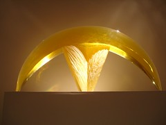

USA West Coast Big Trip Blog (In Order)
Feel free to email .
Olympic National Park
Wow, have we had a wonderful time in Washington! We spent 5 days at various places in Olympic National Park on the west side of the Olympic Penninsula. All gorgeous. Rainforest and Beach. Lakes and beautiful sunny swimming holes. We'll try to get some pictures up for you in the next few days.
The night before last it rained for the first time in 17 days! It hadn't rained since we left Prince Rupert, not for the whole length of Vancouver Island and Washington. And then it turned sunny again in the morning. Today we're at Ocean Shores, Washington on the beach taking a rest day. I hope to buy a kite and fly it on the beach. Nancy will be drawing the sunset.
Stuart eating berries
Here is he is stop to enjoy the blackberries along the side of the highway. Life really provides everything we need.
Spruce Railroad Trail

How did I ever get myself into this? Here Nancy is doing a hikering biking around Crescent Lake. It is better to walk and be able to ride another day then to biff and slide down the gravel embankment.
Crescent lake is a 650 feet crystal clear lake with the best swimming holes we seen so far.
For those that want to avoid the traffic on the south side, try this little known trail called the Spruce RailRoad trail that follows the lake on the northside through the forest. Otherwise take the the south side but push the button at the beginning of the ride which will warn drivers there are bicylist on the road.
Hurricane Ridge

I must say the ride down was fantastic and worth ride up.
Hug Point

Here we are taking a moment to enjoy a special moment at Hug Point along the Oregon Coast as we ride up Route 101 to our campground near Ocean City. Oswald state park is a walk-in site next to premier surfing beach. The camping is an amazing experience where you haul your stuff down to the forested camp site in a wheel barrel down about a half mile to the site which is set next to the goreous surfing beaches.
Thanks to our friends Bob and Honna who drove ahead and found us a site on labor day weekend. I can not believe we even got a site her of all places on labor day weekend
Cape Kiwanda Fence

We rode here on Weds with the wind at our backs and had lunch. Don't miss this one even if it is a good solid hike to here. The wind sculptures the trees, the sand dunes, the rocks into perfect photographic images. What do you think? Pretty nice. Eh? ( I am trying to learn to talk like a Canadian by saying "eh?" at the end of a sentence and making it sound like a question.)

Cape Kiwanda

Cape Kiwanda dunes

Oregon coast
We have been riding along the Oregon Coast for the last 4 days. The big, wild Pacific coast is inspiring to experience. The beaches are nestled in between cliffs lined with towering evergreens leaning away from the oceans powerful offshore winds. Occasionally parts of towering cliffs have collapsed down to the protected beaches. The beaches are wonderful places to walk, explore tidal pools, surf or even drive cars. Every corner offers a new photograph opportunity.

We are in Lincoln City, Oregon, staying at a warmshowers.org bicycling host. Thank you Suzie and Jim. We sat in their jaccuzi and watched the sun set over the breaking waves. For almost two weeks we have been going to sleep with the sound of the ocean waves lapping at the evening darkness.
I am finding the roads in Oregon mostly great with a few sections of hell. Today was a tough climb up a windy 4 lane section of highway 101. Cars love to cut the curves which have very little shoulder on the climb up and the over grown blackberry bushes hide us around dangerous curves. Both of us nearly got taken out by a car driving on the shoulder around a right hand curve.
We are finding many bicycle tourists in Oregon, more then we have ever seen. Every day we make a ton of new friends. Our newest friend Stuart, from Wellington New Zealand, has been riding with us for the last three days. He has taken the night off to be alone. It seems all this socializing is a bit overwhelming after he has spent almost 3 months cycling alone. We love riding with him because of his fun loving adventurous spirit and the way he views the world. We laugh while we ride.
Oregon Coast is much too much fun
We're just having an amazing blast on the Oregon Coast. It has to be the most fun bike touring we've ever run into. Every day there's a new sight. Yesterday we went sandboarding on the dunes, and then Jason at Seaside Glass let Nancy help with the glassblowing and create a vase!
Every night there's another beautiful State Park, with quiet, natural hiker-biker areas, for which we pay $4 each. And that includes the unlimited hot shower. And we meet the (many) other cyclists headed our way.
We could spend a month on this coast, and the weather is just amazingly wonderful. We still have had only 1 rain in the last month, and it was one night at a rainforest in the Olympic National Park. We're getting mighty spoiled. The raingear has drifted to the bottom of the panniers.
We're also out of bear country and have gotten sloppy about our food management. Last night a raccoon got into my food pannier and made quite a mess. No harm done, though. We just have to reorganize and get more granola, bread, milk, and coffee. A wakeup call though - just because there's no bears doesn't mean you don't have to take better care of food and trash.
California Dreamin'
We haven't had much good solid internet access here in California, but we're having a fine time. In about 450 miles in California we've enjoyed many wonderful redwood forests (including a great day off hiking to Fern Canyon in the Prairie Creek Redwood State Park) and beaches and coastline galore. The coast is amazingly rough and the waves seem bigger here. Lots to watch.
It's amazing that we've ridden just almost 4000 miles on our journey - it should be over 5000 when we get home, and maybe 20,000 or more when we get to Patagonia. This ride down the Pacific Coast has been about 1200 miles of bike-touring ecstasy. Beautiful beaches, perfect weather, easy campsites, a warm shower every night. We'll have to get used to more primitive situations as we head east.
Tomorrow we ride over the Golden Gate bridge into San Francisco - it's a banner moment - the end of our southward motion for now. We'll head east from here to Sacramento and then over the Sierra Nevada and hoping to scurry home by the end of October. Wish us well with the weather in the Sierras and the high desert!
Golden Gate Bridge into San Francisco

We rode over the bridge and into the city and immediately found our way across town to a dentist (Randy had a crown come off a few days ago). Then we crossed through downtown at rush hour, dodging the cars and having a grand old time, to find our friend Stuart and new friends Dave and Shelagh. It was a grand day.
The way into SF was a bit confusing, but along came Carlos and Monica, who were just out from the city for a weekend bike trip to the north. They led us all the way in through the towns to the north and we didn't have to follow the book turn-by-turn. It was a wonderful thing.
We're thinking we'll take a few rest days here and explore the city. We want to be ready for the big ride crossing the desert, and we want to make sure we're mentally ready to do it as bike tourists, rather than just rushing home just because we're on the way to Colorado.
I'm actually considering buying (and carrying) a small laptop because it's been so hard to update the site and get pictures together and support customers and the Warmshowers.org site. We'll see what happens. But if we get a computer you'll probably have to skim faster when you check the site :-)
Update: I actually bought a laptop and am going to try carrying it. Quite a radical departure from our style...
We bought a computer to use on the road

Bike tourists and the homeless

Of course, bike touring is just a case of almost-homeless. I often say it's the last acceptable form of homelessness in the U.S. But the wonderful and cheap facilities they've provided for us are attractive to others, including *real* homeless people, people who have no home to run back to and no credit card to bail them out if things get hard.
We met Ernest in California, just two weeks out of prison and living from campground to campground as he waited to get some money together. He's from Pasadena, Texas and a fine and enjoyable fellow. And we met a legend of the coast: Duggan. He rides up and down the coast every summer, panhandling a bit from bike tourists who take pity on his latest story.
But the most interesting and admirable person we met in the "homeless" category was not truly homeless. We met Arone Garrison on the road. She was pulling a large, wide trailer loaded with her (large) cat and all her worldly possessions. She found herself homeless in Bend, Oregon, but a friend in San Francisco promised her a place to stay and a job if she could get there. With no transportation and no money, and with a cat to care for, she just loaded it all up and started riding to San Francisco. What a courageous thing to do! All these bike tourists are just recreating. And the few real "homeless" people are just passing the time. But Arone is using her bicycle to move on with her life. We're rooting for you, Arone! We think you'll be successful and it will be an incredible turning point in your life.
California Redwoods

A week off in San Francisco

I got my hair cut in Chinatown by a male stylus who spoke very little English but did seem to mutter over and over as he cut my hair "too much hair". After the haircut I got a Chinese acupressure massage by a young lady, Eva, who did speak English. It was a treat for me to get the knots worked out that I had gathered after 4000 miles of riding. In the very late evening we had a small bite to eat in the Italian sections of the city at "Calzones" We sat at an outdoor table under the heated canopy watching the flood of people who crawled the evening streets looking for a life changing event. I know that most never found it that night. It made me think of how nice and full our life is by the simplicity of bicycle touring and having each other to share our adventure together.
Today we finally got on our bikes and rode over the Golden Gate bridge to the Marin Headlands of the Golden Gate Recreation Area. Carlos, a wonderful new friend, showed us the city and the parks. He was a wonderful guide and companion for our biking adventure in San Francisco. As a side note: if any one wishes to go for a 400 kilometer ride in one day, contact Carlos who does these very long rides and has all the information. Does anyone find it interesting that we make friends with extreme adventurists? He can also help you with 600 and 1200 kilometer rides.
Boy, what city of life and culture and and wonderful times. We are heading out tomorrow if we can really leave this exciting place. We have decided that the coast is calling us more so we will follow the Pacific highway to the Mexico/United States border.
Sick for the first time on tour
Well, I'm sick for the first time in my bike touring career. Too many days at the hostel in San Francisco, with too many sick people there. I just have a cold, but it seems to be hanging on. Nancy hasn't gotten it yet, so cross your fingers.
We always knew that we'd eventually have to deal with being sick if we were going to do long trips, so in some ways this is just a learning experience for us.
But for now we're holed up in a motel near San Simeon, William Randolf Hearst's famous castle. Nancy went and did the tour today and really enjoyed it. Hearst was quite a notorious figure.
Hearst Castle

From down on the Pacific highway looking up at the castle way way up on the hill, the castle looks like a Disney like icon but it is something total different when taking tour.
I was very lucky to get the last ticket of the last tour of the day. (mostly because I asked if all the sold out tickets has been picked up.)After waiting an hour I should up at 3:15 when the people on the waiting list got to buy tickets. I got the last available seat on the tour.
For those that do not know about W.R Hearst, he built an empire through publishing major Newspapers and Magazines :throughout the United States in the 1920 to 1950's. He had a dream when he was in his late 50's to build an amazing palace to house a full spectrum of art, sculptures, tapestries from all over the world that dated from around the 3rd century AD to the 21st century.
The famous movie Citizen Kane was based on Hearst's life and he attempted to quash it - with pretty significant success.
Monterey and Big Sur

There are new pictures on the photos page from the coast south of San Francisco, the Monterey Bay Aquarium, and the Big Sur.
We found Arone Garrison, the rogue biker, near Monterey - she continued on south; the job in San Francisco didn't work out, so she'll go to Texas to see her mother. The cat is still well, and it looks like Arone is also. We're still rooting for you, Arone!
Entering the Big City
Well here we are entering the big city. We have lots of friends to see here and then we'll ride down to San Diego and the border.
We just spend the last couple of days in Oxnard with our incredible new friends Pat and Cat, who just returned from riding their bikes all over the world. Check out their website at worldriders2.com. They're the most gracious people you could imagine, treating us to warm hospitality and touring wisdom and encouragement. Pat and Cat rode not only the huge ride we have planned, but across the US, Europe, and Africa as well!
Randy is feeling better and Nancy has still not caught the cold.
Our plans are in a bit of flux, but first visit friends in LA, then ride to San Diego to visit another old friend, then go to Tijuana for a haircut for Randy, and then maybe rent a car to come home. We should be home in early November.